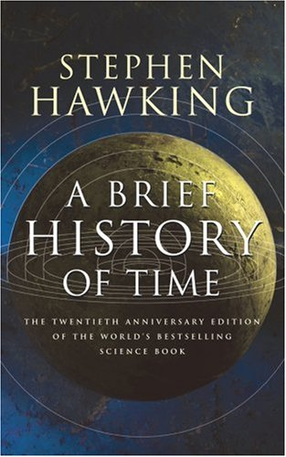

Introduction
 A Brief History of Time: From the Big Bang to Black Holes is a book on theoretical cosmology by English physicist Stephen Hawking. It was first published in 1988. Hawking wrote the book for readers who had no prior knowledge of physics. In A Brief History of Time, Hawking writes in non-technical terms about the structure, origin, development and eventual fate of the Universe, which is the object of study of astronomy and modern physics. He talks about basic concepts like space and time, basic building blocks that make up the Universe (such as quarks) and the fundamental forces that govern it (such as gravity). He writes about cosmological phenomena such as the Big Bang and black holes. He discusses two major theories, general relativity and quantum mechanics, that modern scientists use to describe the Universe. Finally, he talks about the search for a unifying theory that describes everything in the Universe in a coherent manner. The book became a bestseller and sold more than 25 million copies.